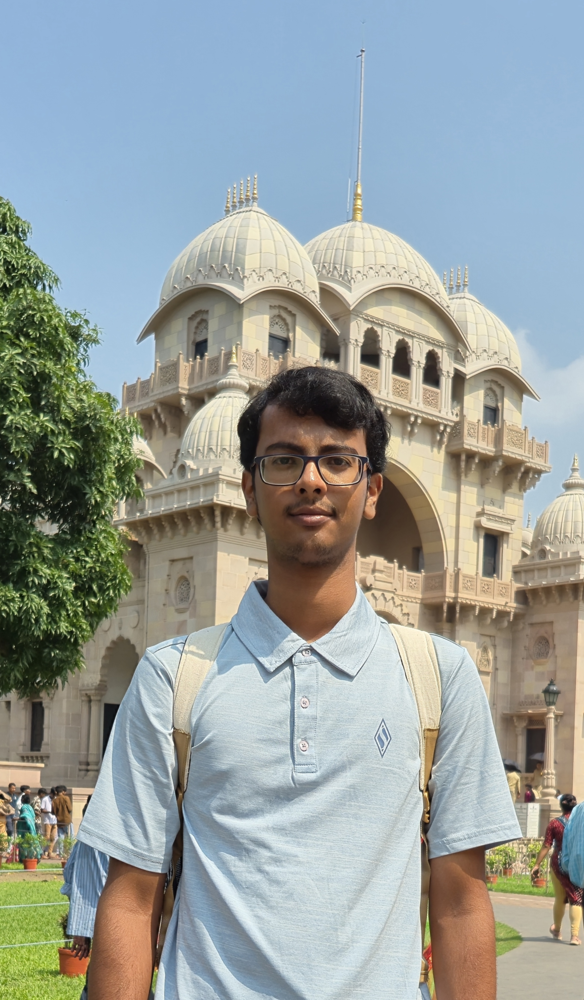
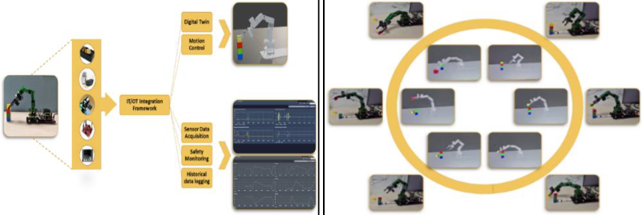
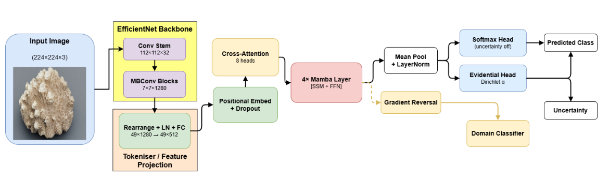
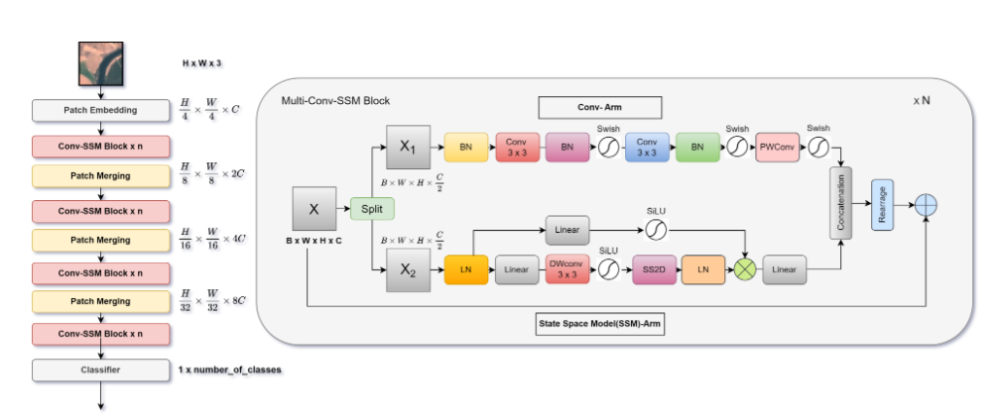

|

Google Scholar | Github | LinkedIn | More about me: Blog | Coursework | Ongoing Projects |
I am a third-year undergraduate in Mechanical Engineering at Indian Institute of Engineering Science and Technology Shibpur
with a deep interest in Robotics, Artificial Intelligence and its applications. My work spans robotic manipulation, computer vision, IoT architectures, and simulation-based control, with hands-on
experience in ROS, Isaac Sim, PyBullet, Blender, and embedded systems. Recently, I've been exploring Reinforcement Learning and SLAM in robotics.
I recently completed an Internship at Carnegie Mellon University working with Prof. Pradeep Ravikumar in the Machine Learning Department. My research focused on causal representation learning, neurosymbolic AI, and machine unlearning with provable guarantees. Previously, I was a Research Intern at the University of Copenhagen working with Dr. Panagiotis Karras in the Department of Computer Science, DIKU on developing high dimensional nearest neighbor search algorithms. I am also a Research Assistant at IIT Delhi with Dr. Sayan Ranu in the Data Science and Information Retrieval Lab (DSIRE), working on graph neural networks and data distillation. I have also worked with Dr. Tarak Karmakar in the Computational Chemistry, Materials & Biology (CCMB) lab at IIT Delhi on molecular solubility prediction using graph neural networks. I love reading random facts, listening to jazz music, and right now, I'm just trying to work my way through quizzes and academics. :3 I am always open to collaborations and discussions. Please feel free to reach out! Other: Achievements | Fun/Favorites |
| |
| [Oct 25] | First-author paper "Panorama: Fast-Track Nearest Neighbors" submitted to arXiv! Developed data-adaptive learned transforms for 2-30× speedup in nearest neighbor search. [arXiv] |
| [Jul 25] | Completed summer internship at RAIL - Carnegie Mellon University! Worked on machine unlearning, concept forgetting, and neurosymbolic architectures. [LinkedIn] |
| [Apr 25] | Presented "Bonsai" to Prof. Michael Bronstein at ICLR 2025 Singapore! [LinkedIn] |
| [May 25] | Received CSE Research Acceleration Fund (RAF) grant for research with Dr. Sayan Ranu to present at ICLR 2025. [LinkedIn] |
| [Feb 25] | Paper "Bonsai: Gradient-free Graph Distillation for Node Classification" accepted at ICLR 2025! [LinkedIn] |
| [Nov 24] | Spoke at American Chemical Society and BioPractify's 38th Students Journal Club on AI for Applied Sciences. [LinkedIn] |
| [Dec 24] | Team Pi Propulsion wins National Champions at Lam Research Challenge 2024 - prize of INR 5,00,000. [LinkedIn] |
| [Nov 24] | Achieved 4th place nationally at Goldman Sachs India Hackathon 2024 among 8,000 participants. [LinkedIn] |
| [Sep 24] | Won First Position in Citadel's Quants Arena Challenge! [LinkedIn] |
| [Aug 25] | Received Danish Data Science Academy Scholarship to work with Dr. Panagiotis Karras at the University of Copenhagen on high-dimensional similarity search. [LinkedIn] |
| [Jul 24] | First-author paper published in ACS Journal of Chemical Theory and Computation! [LinkedIn] |
| |
|  |
|
|  |
|
|  |
|
|
|
| |
|
Research Assistant May 2024 - Aug 2024 Carnegie Mellon University Pittsburgh, PA, USA |
Worked with Prof. Pradeep Ravikumar in the Statistical & Symbolic Learning Group, MLD. Research focus on formalizing unlearning, designing mechanisms with provable removal guarantees for data and representations. Developing NeuroSymbolic architecture for lifting neural models via symbolic modules for interpretability and convergence. |
|
Research Intern May 2024 - June 2024 University of Copenhagen Copenhagen, Denmark |
Worked with Dr. Panagiotis Karras in Software, Data, People & Society, DIKU. Developed PANORAMA: a machine learning-driven approach that tackles the ANNS verification bottleneck through data-adaptive learned orthogonal transforms. Achieved 2-30× end-to-end speedup with no recall loss across diverse datasets from CIFAR-10 to modern embedding spaces including OpenAI's Ada 2 and Large 3. |
|
Research Assistant Feb 2024 - Present IIT Delhi Delhi, India |
Working with Dr. Sayan Ranu in Data Science and Information Retrieval Lab (DSIRE). Developed Bonsai: linear-time graph distillation algorithm achieving 22x faster processing across 6 real-world datasets. Achieved state-of-the-art accuracy in 14/18 test scenarios, outperforming other baselines by ≥5% in multiple cases. |
|
Research Intern Dec 2023 - Jan 2024 IIT Delhi Delhi, India |
Worked with Dr. Tarak Karmakar in Computational Chemistry, Materials & Biology (CCMB). Developed state-of-the-art GNN framework for solubility prediction using novel Merged-Molecule approach. Achieved R² of 0.767 and MAE of 0.78 on test set; average MAE of 0.79 across 65 solvents. |

|
Template: Siba Smarak Panigrahi |